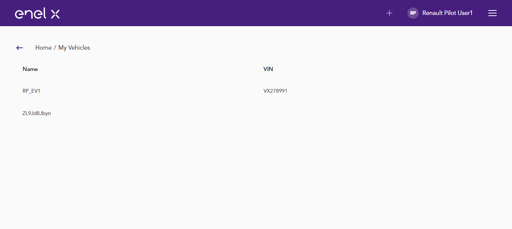

Started
Jul 4, 2021 04:38:07 PM
Ended
Jul 4, 2021 04:44:01 PM
Features Passed
0
Features Failed
2
Features
Scenarios
Steps
Timeline
System/Environment
| Name | Value |
|---|---|
| build | 1.1 |
| user | Pralay |
| AppName | Energy Service |
| os | Windows |
-
Login Page Feature
16:38:15 PM / 00:02:55:272 Fail
Login Page Feature
07.04.2021 16:38:15 07.04.2021 16:41:10 00:02:55:272 · #test-id=1FailLogin page titleappHooks.ApplicationHooks.launchBrowser()Given user is on login pageStep skippedWhen user gets the title of the pageStep skippedThen Title should be "Login - Emw.Oem.IdentityServer"Step skippedappHooks.ApplicationHooks.tearDown(io.cucumber.java.Scenario)appHooks.ApplicationHooks.quitBrowser()PassForgot password linkGiven user is on login pageThen Forgot password link should be displayingFailLogin with correct credentialGiven user is on login pageWhen user enters username "rpuser1@yopmail.com"And user enters password "Password@1"And user clicks on login buttonThen user gets the title of the pageAnd page title should be "Energy Service"Step skippedappHooks.ApplicationHooks.tearDown(io.cucumber.java.Scenario)Login_with_correct_credential -
Verify navigation menu
16:41:10 PM / 00:02:50:776 Fail
Verify navigation menu
07.04.2021 16:41:10 07.04.2021 16:44:01 00:02:50:776 · #test-id=28FailProject page titleGiven user has already logged in to the applicationUsername Password admin@emotorwerks.com !eMW12345 Given user is on project pageWhen user gets the title of the home pageStep skippedThen the page title should be "Energy Services"Step skippedappHooks.ApplicationHooks.tearDown(io.cucumber.java.Scenario)Project_page_titleFailNavigation menu countGiven user has already logged in to the applicationUsername Password admin@emotorwerks.com !eMW12345 Given user is on project pageThen user gets the navigation sectionProjects Utility data reporting Reports Dictionaries My Vehicles Administration Reward Programs Step skippedAnd Navigation count should be 7Step skippedappHooks.ApplicationHooks.tearDown(io.cucumber.java.Scenario)Navigation_menu_count
-
org.openqa.selenium.WebDriverException
1 tests
org.openqa.selenium.WebDriverException
1 failedStatus Timestamp TestName Fail 16:38:15 PM appHooks.ApplicationHooks.launchBrowser() Login Page Feature.Login page title.appHooks.ApplicationHooks.launchBrowser() -
java.lang.NullPointerException
1 tests
java.lang.NullPointerException
1 failedStatus Timestamp TestName Fail 16:38:42 PM appHooks.ApplicationHooks.tearDown(io.cucumber.java.Scenario) Login Page Feature.Login page title.appHooks.ApplicationHooks.tearDown(io.cucumber.java.Scenario)Fail 16:38:42 PM appHooks.ApplicationHooks.quitBrowser() Login Page Feature.Login page title.appHooks.ApplicationHooks.quitBrowser() -
org.openqa.selenium.TimeoutException
1 tests
org.openqa.selenium.TimeoutException
1 failedStatus Timestamp TestName Fail 16:40:09 PM Then user gets the title of the page Login Page Feature.Login with correct credential.Then user gets the title of the pageFail 16:41:34 PM Given user is on project page Verify navigation menu.Project page title.Given user is on project pageFail 16:43:00 PM Given user is on project page Verify navigation menu.Navigation menu count.Given user is on project page